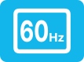

Scud Race
Sega Arcade

- Sega Model 3 PowerPC 603e program statically translated to C, with the 68000 sound program translated too
- Real3D rendering follows Supermodel’s New3D as the accuracy reference
- Some graphical details improved beyond MAME and Supermodel
- Optional widescreen: a wider 3D view with the original HUD centred
- Graphics ROM pages streamed per course from SD into MEM2 ahead of need
- Rumble driven by the cabinet’s drive board